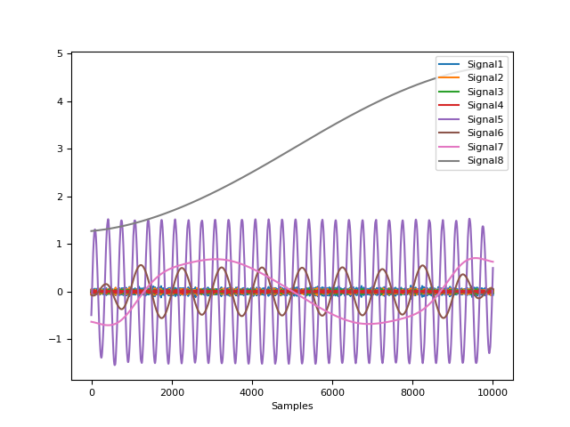
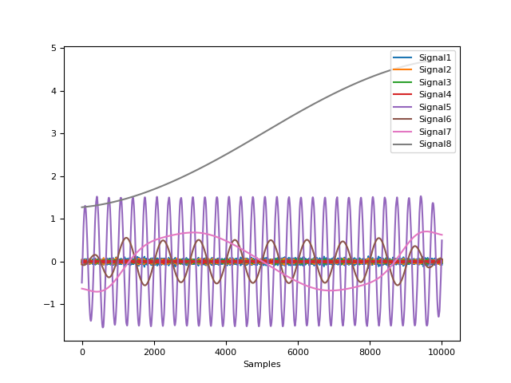
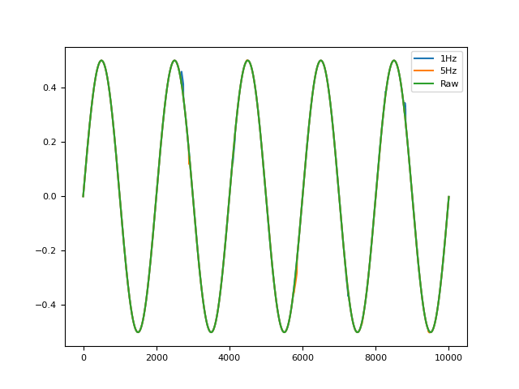
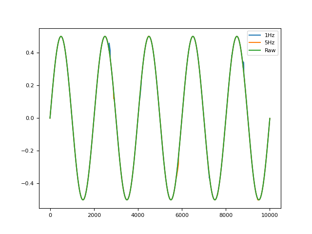
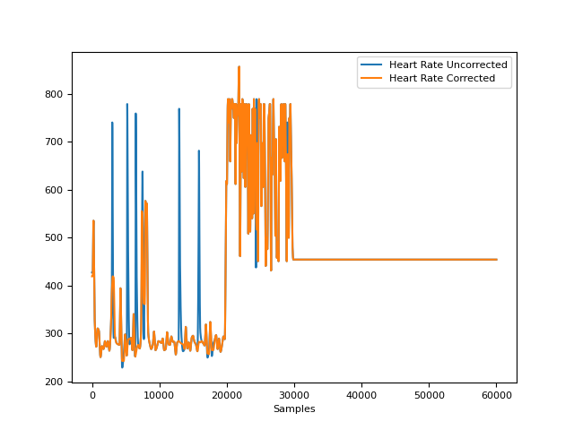
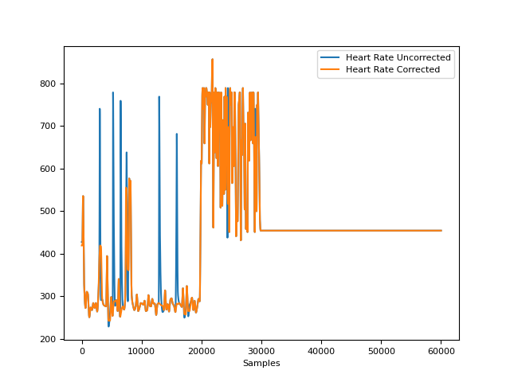

Signal
Contents
Signal#
Transformation#
signal_binarize()#
- signal_binarize(signal, method='threshold', threshold='auto')[source]#
Binarize a continuous signal
Convert a continuous signal into zeros and ones depending on a given threshold.
- Parameters
signal (Union[list, np.array, pd.Series]) – The signal (i.e., a time series) in the form of a vector of values.
method (str) – The algorithm used to discriminate between the two states. Can be one of ‘mixture’ (default) or ‘threshold’. If ‘mixture’, will use a Gaussian Mixture Model to categorize between the two states. If ‘threshold’, will consider as activated all points which value is superior to the threshold.
threshold (float) – If method is ‘mixture’, then it corresponds to the minimum probability required to be considered as activated (if ‘auto’, then 0.5). If method is ‘threshold’, then it corresponds to the minimum amplitude to detect as onset. If “auto”, takes the value between the max and the min.
- Returns
list – A list or array depending on the type passed.
Examples
In [1]: import neurokit2 as nk In [2]: import numpy as np In [3]: import pandas as pd In [4]: signal = np.cos(np.linspace(start=0, stop=20, num=1000)) In [5]: binary = nk.signal_binarize(signal) In [6]: pd.DataFrame({"Raw": signal, "Binary": binary}).plot() Out[6]: <AxesSubplot:>

signal.decompose()#
- signal_decompose(signal, method='emd', n_components=None, **kwargs)[source]#
Decompose a signal
Signal decomposition into different sources using different methods, such as Empirical Mode Decomposition (EMD) or Singular spectrum analysis (SSA)-based signal separation method.
The extracted components can then be recombined into meaningful sources using
signal_recompose().- Parameters
signal (Union[list, np.array, pd.Series]) – Vector of values.
method (str) – The decomposition method. Can be one of ‘emd’ or ‘ssa’.
n_components (int) – Number of components to extract. Only used for ‘ssa’ method. If
None, will default to 50.**kwargs – Other arguments passed to other functions.
- Returns
Array – Components of the decomposed signal.
See also
signal_recomposeExamples
In [1]: import neurokit2 as nk # Create complex signal In [2]: signal = nk.signal_simulate(duration=10, frequency=1, noise=0.01) # High freq In [3]: signal += 3 * nk.signal_simulate(duration=10, frequency=3, noise=0.01) # Higher freq In [4]: signal += 3 * np.linspace(0, 2, len(signal)) # Add baseline and trend In [5]: signal += 2 * nk.signal_simulate(duration=10, frequency=0.1, noise=0) In [6]: nk.signal_plot(signal)
 
# Example 1: Using the EMD method In [7]: components = nk.signal_decompose(signal, method="emd") # Visualize Decomposed Signal Components In [8]: nk.signal_plot(components)
# Example 2: USing the SSA method In [9]: components = nk.signal_decompose(signal, method="ssa", n_components=5) # Visualize Decomposed Signal Components In [10]: nk.signal_plot(components) # Visualize components
{kind=link}
{kind=link}
signal_detrend()#
- signal_detrend(signal, method='polynomial', order=1, regularization=500, alpha=0.75, window=1.5, stepsize=0.02)[source]#
Polynomial detrending of signal
Apply a baseline (order = 0), linear (order = 1), or polynomial (order > 1) detrending to the signal (i.e., removing a general trend). One can also use other methods, such as smoothness priors approach described by Tarvainen (2002) or LOESS regression, but these scale badly for long signals.
- Parameters
signal (Union[list, np.array, pd.Series]) – The signal (i.e., a time series) in the form of a vector of values.
method (str) – Can be one of ‘polynomial’ (default; traditional detrending of a given order) or ‘tarvainen2002’ to use the smoothness priors approach described by Tarvainen (2002) (mostly used in HRV analyses as a lowpass filter to remove complex trends), ‘loess’ for LOESS smoothing trend removal or ‘locreg’ for local linear regression (the ‘runline’ algorithm from chronux).
order (int) – Only used if method is ‘polynomial’. The order of the polynomial. 0, 1 or > 1 for a baseline (‘constant detrend’, i.e., remove only the mean), linear (remove the linear trend) or polynomial detrending, respectively. Can also be ‘auto’, in which case it will attempt to find the optimal order to minimize the RMSE.
regularization (int) – Only used if method=’tarvainen2002’. The regularization parameter (default to 500).
alpha (float) – Only used if method is ‘loess’. The parameter which controls the degree of smoothing.
window (float) – Only used if method is ‘locreg’. The detrending ‘window’ should correspond to the desired low frequency band to remove multiplied by the sampling rate (for instance,
1.5*1000will remove frequencies below 1.5Hz for a signal sampled at 1000Hz).stepsize (float) – Only used if method is ‘locreg’. Similarly to ‘window’, ‘stepsize’ should also be multiplied by the sampling rate.
- Returns
array – Vector containing the detrended signal.
See also
signal_filter,fit_loessExamples
In [1]: import numpy as np In [2]: import pandas as pd In [3]: import neurokit2 as nk In [4]: import matplotlib.pyplot as plt # Simulate signal with low and high frequency In [5]: signal = nk.signal_simulate(frequency=[0.1, 2], amplitude=[2, 0.5], sampling_rate=100) In [6]: signal = signal + (3 + np.linspace(0, 6, num=len(signal))) # Add baseline and linear trend # Apply detrending algorithms # Method 1: Default Polynomial Detrending of a Given Order # Constant detrend (removes the mean) In [7]: baseline = nk.signal_detrend(signal, order=0) # Linear Detrend (removes the linear trend) In [8]: linear = nk.signal_detrend(signal, order=1) # Polynomial Detrend (removes the polynomial trend) In [9]: quadratic = nk.signal_detrend(signal, order=2) # Quadratic detrend In [10]: cubic = nk.signal_detrend(signal, order=3) # Cubic detrend In [11]: poly10 = nk.signal_detrend(signal, order=10) # Linear detrend (10th order) # Method 2: Tarvainen's smoothness priors approach (Tarvainen et al., 2002) In [12]: tarvainen = nk.signal_detrend(signal, method='tarvainen2002') # Method 3: LOESS smoothing trend removal In [13]: loess = nk.signal_detrend(signal, method='loess') # Method 4: Local linear regression (100Hz) In [14]: locreg = nk.signal_detrend(signal, method='locreg', ....: window=1.5*100, stepsize=0.02*100) ....: # Visualize different methods In [15]: axes = pd.DataFrame({"Original signal": signal, ....: "Baseline": baseline, ....: "Linear": linear, ....: "Quadratic": quadratic, ....: "Cubic": cubic, ....: "Polynomial (10th)": poly10, ....: "Tarvainen": tarvainen, ....: "LOESS": loess, ....: "Local Regression": locreg}).plot(subplots=True) ....: # Plot horizontal lines to better visualize the detrending In [16]: for subplot in axes: ....: subplot.axhline(y=0, color='k', linestyle='--') ....:
References
Tarvainen, M. P., Ranta-Aho, P. O., & Karjalainen, P. A. (2002). An advanced detrending method with application to HRV analysis. IEEE Transactions on Biomedical Engineering, 49(2), 172-175
{kind=link}
signal_distort()#
- signal_distort(signal, sampling_rate=1000, noise_shape='laplace', noise_amplitude=0, noise_frequency=100, powerline_amplitude=0, powerline_frequency=50, artifacts_amplitude=0, artifacts_frequency=100, artifacts_number=5, linear_drift=False, random_state=None, silent=False)[source]#
Signal distortion
Add noise of a given frequency, amplitude and shape to a signal.
- Parameters
signal (Union[list, np.array, pd.Series]) – The signal (i.e., a time series) in the form of a vector of values.
sampling_rate (int) – The sampling frequency of the signal (in Hz, i.e., samples/second).
noise_shape (str) – The shape of the noise. Can be one of ‘laplace’ (default) or ‘gaussian’.
noise_amplitude (float) – The amplitude of the noise (the scale of the random function, relative to the standard deviation of the signal).
noise_frequency (float) – The frequency of the noise (in Hz, i.e., samples/second).
powerline_amplitude (float) – The amplitude of the powerline noise (relative to the standard deviation of the signal).
powerline_frequency (float) – The frequency of the powerline noise (in Hz, i.e., samples/second).
artifacts_amplitude (float) – The amplitude of the artifacts (relative to the standard deviation of the signal).
artifacts_frequency (int) – The frequency of the artifacts (in Hz, i.e., samples/second).
artifacts_number (int) – The number of artifact bursts. The bursts have a random duration between 1 and 10% of the signal duration.
linear_drift (bool) – Whether or not to add linear drift to the signal.
random_state (int) – Seed for the random number generator. Keep it fixed for reproducible results.
silent (bool) – Whether or not to display warning messages.
- Returns
array – Vector containing the distorted signal.
Examples
In [1]: import numpy as np In [2]: import pandas as pd In [3]: import neurokit2 as nk In [4]: signal = nk.signal_simulate(duration=10, frequency=0.5) # Noise In [5]: noise = pd.DataFrame({"Freq100": nk.signal_distort(signal, noise_frequency=200), ...: "Freq50": nk.signal_distort(signal, noise_frequency=50), ...: "Freq10": nk.signal_distort(signal, noise_frequency=10), ...: "Freq5": nk.signal_distort(signal, noise_frequency=5), ...: "Raw": signal}).plot() ...:
 
# Artifacts In [6]: artifacts = pd.DataFrame({"1Hz": nk.signal_distort(signal, noise_amplitude=0, ...: artifacts_frequency=1, ...: artifacts_amplitude=0.5), ...: "5Hz": nk.signal_distort(signal, noise_amplitude=0, ...: artifacts_frequency=5, ...: artifacts_amplitude=0.2), ...: "Raw": signal}).plot() ...:
{kind=link}
signal_filter()#
- signal_filter(signal, sampling_rate=1000, lowcut=None, highcut=None, method='butterworth', order=2, window_size='default', powerline=50, show=False)[source]#
Filter a signal using ‘butterworth’, ‘fir’ or ‘savgol’ filters
Apply a lowpass (if ‘highcut’ frequency is provided), highpass (if ‘lowcut’ frequency is provided) or bandpass (if both are provided) filter to the signal.
- Parameters
signal (Union[list, np.array, pd.Series]) – The signal (i.e., a time series) in the form of a vector of values. or “bandstop”.
sampling_rate (int) – The sampling frequency of the signal (in Hz, i.e., samples/second).
lowcut (float) – Lower cutoff frequency in Hz. The default is None.
highcut (float) – Upper cutoff frequency in Hz. The default is None.
method (str) – Can be one of “butterworth”, “fir”, “bessel” or “savgol”. Note that for Butterworth, the function uses the SOS method from
scipy.signal.sosfiltfilt, recommended for general purpose filtering. One can also specify “butterworth_ba” for a more traditional and legacy method (often implemented in other software).order (int) – Only used if method is “butterworth” or “savgol”. Order of the filter (default is 2).
window_size (int) – Only used if method is “savgol”. The length of the filter window (i.e. the number of coefficients). Must be an odd integer. If ‘default’, will be set to the sampling rate divided by 10 (101 if the sampling rate is 1000 Hz).
powerline (int) – Only used if method is “powerline”. The powerline frequency (normally 50 Hz or 60 Hz).
show (bool) – If
True, plot the filtered signal as an overlay of the original.
See also
signal_detrend,signal_psd- Returns
array – Vector containing the filtered signal.
Examples
In [1]: import numpy as np In [2]: import pandas as pd In [3]: import neurokit2 as nk In [4]: signal = nk.signal_simulate(duration=10, frequency=0.5) # Low freq In [5]: signal += nk.signal_simulate(duration=10, frequency=5) # High freq # Visualize Lowpass Filtered Signal using Different Methods In [6]: fig1 = pd.DataFrame({"Raw": signal, ...: "Butter_2": nk.signal_filter(signal, highcut=3, method='butterworth', ...: order=2), ...: "Butter_2_BA": nk.signal_filter(signal, highcut=3, ...: method='butterworth_ba', order=2), ...: "Butter_5": nk.signal_filter(signal, highcut=3, method='butterworth', ...: order=5), ...: "Butter_5_BA": nk.signal_filter(signal, highcut=3, ...: method='butterworth_ba', order=5), ...: "Bessel_2": nk.signal_filter(signal, highcut=3, method='bessel', order=2), ...: "Bessel_5": nk.signal_filter(signal, highcut=3, method='bessel', order=5), ...: "FIR": nk.signal_filter(signal, highcut=3, method='fir')}).plot(subplots=True) ...:

# Visualize Highpass Filtered Signal using Different Methods In [7]: fig2 = pd.DataFrame({"Raw": signal, ...: "Butter_2": nk.signal_filter(signal, lowcut=2, method='butterworth', ...: order=2), ...: "Butter_2_ba": nk.signal_filter(signal, lowcut=2, ...: method='butterworth_ba', order=2), ...: "Butter_5": nk.signal_filter(signal, lowcut=2, method='butterworth', ...: order=5), ...: "Butter_5_BA": nk.signal_filter(signal, lowcut=2, ...: method='butterworth_ba', order=5), ...: "Bessel_2": nk.signal_filter(signal, lowcut=2, method='bessel', order=2), ...: "Bessel_5": nk.signal_filter(signal, lowcut=2, method='bessel', order=5), ...: "FIR": nk.signal_filter(signal, lowcut=2, method='fir')}).plot(subplots=True) ...:
# Using Bandpass Filtering in real-life scenarios # Simulate noisy respiratory signal In [8]: original = nk.rsp_simulate(duration=30, method="breathmetrics", noise=0) In [9]: signal = nk.signal_distort(original, noise_frequency=[0.1, 2, 10, 100], noise_amplitude=1, ...: powerline_amplitude=1) ...: # Bandpass between 10 and 30 breaths per minute (respiratory rate range) In [10]: fig3 = pd.DataFrame({"Raw": signal, ....: "Butter_2": nk.signal_filter(signal, lowcut=10/60, highcut=30/60, ....: method='butterworth', order=2), ....: "Butter_2_BA": nk.signal_filter(signal, lowcut=10/60, highcut=30/60, ....: method='butterworth_ba', order=2), ....: "Butter_5": nk.signal_filter(signal, lowcut=10/60, highcut=30/60, ....: method='butterworth', order=5), ....: "Butter_5_BA": nk.signal_filter(signal, lowcut=10/60, highcut=30/60, ....: method='butterworth_ba', order=5), ....: "Bessel_2": nk.signal_filter(signal, lowcut=10/60, highcut=30/60, ....: method='bessel', order=2), ....: "Bessel_5": nk.signal_filter(signal, lowcut=10/60, highcut=30/60, ....: method='bessel', order=5), ....: "FIR": nk.signal_filter(signal, lowcut=10/60, highcut=30/60, ....: method='fir'), ....: "Savgol": nk.signal_filter(signal, method='savgol')}).plot(subplots=True) ....:

{kind=link}
signal_flatline()#
- signal_flatline(signal, threshold=0.01)[source]#
Return the Flatline Percentage of the Signal
- Parameters
signal (Union[list, np.array, pd.Series]) – The signal (i.e., a time series) in the form of a vector of values.
threshold (float, optional) – Flatline threshold relative to the biggest change in the signal. This is the percentage of the maximum value of absolute consecutive differences.
- Returns
float – Percentage of signal where the absolute value of the derivative is lower then the threshold.
Examples
In [1]: import neurokit2 as nk In [2]: signal = nk.signal_simulate(duration=5) In [3]: nk.signal_flatline(signal) Out[3]: 0.008
signal_interpolate()#
- signal_interpolate(x_values, y_values, x_new=None, method='quadratic')[source]#
Interpolate a signal
Interpolate a signal using different methods.
- Parameters
x_values (Union[list, np.array, pd.Series]) – The samples corresponding to the values to be interpolated.
y_values (Union[list, np.array, pd.Series]) – The values to be interpolated.
x_new (Union[list, np.array, pd.Series] or int) – The samples at which to interpolate the y_values. Samples before the first value in x_values or after the last value in x_values will be extrapolated. If an integer is passed, nex_x will be considered as the desired length of the interpolated signal between the first and the last values of x_values. No extrapolation will be done for values before or after the first and the last values of x_values.
method (str) – Method of interpolation. Can be ‘linear’, ‘nearest’, ‘zero’, ‘slinear’, ‘quadratic’, ‘cubic’, ‘previous’, ‘next’ or ‘monotone_cubic’. The methods ‘zero’, ‘slinear’, ‘quadratic’ and ‘cubic’ refer to a spline interpolation of zeroth, first, second or third order; whereas ‘previous’ and ‘next’ simply return the previous or next value of the point. An integer specifying the order of the spline interpolator to use. See here for details on the ‘monotone_cubic’ method.
- Returns
array – Vector of interpolated samples.
Examples
In [1]: import numpy as np In [2]: import neurokit2 as nk In [3]: import matplotlib.pyplot as plt # Generate Simulated Signal In [4]: signal = nk.signal_simulate(duration=2, sampling_rate=10) # We want to interpolate to 2000 samples In [5]: x_values = np.linspace(0, 2000, num=len(signal), endpoint=False) In [6]: x_new = np.linspace(0, 2000, num=2000, endpoint=False) # Visualize all interpolation methods In [7]: nk.signal_plot([ ...: nk.signal_interpolate(x_values, signal, x_new=x_new, method="zero"), ...: nk.signal_interpolate(x_values, signal, x_new=x_new, method="linear"), ...: nk.signal_interpolate(x_values, signal, x_new=x_new, method="quadratic"), ...: nk.signal_interpolate(x_values, signal, x_new=x_new, method="cubic"), ...: nk.signal_interpolate(x_values, signal, x_new=x_new, method="previous"), ...: nk.signal_interpolate(x_values, signal, x_new=x_new, method="next"), ...: nk.signal_interpolate(x_values, signal, x_new=x_new, method="monotone_cubic") ...: ], labels = ["Zero", "Linear", "Quadratic", "Cubic", "Previous", "Next", "Monotone Cubic"]) ...: # Add original data points In [8]: plt.scatter(x_values, signal, label="original datapoints", zorder=3) Out[8]: <matplotlib.collections.PathCollection at 0x7fe2d2b97790>

signal_surrogate()#
- signal_surrogate(signal, method='IAAFT', **kwargs)[source]#
Create Signal Surrogates
Generate a surrogate version of a signal. Different methods are available, such as:
random: Performs a random permutation of the signal value. This way, the signal distribution is unaffected and the serial correlations are cancelled, yielding a whitened signal with an distribution identical to that of the original.
IAAFT: Returns an Iterative Amplitude Adjusted Fourier Transform (IAAFT) surrogate. It is a phase randomized, amplitude adjusted surrogates with the same power spectrum (to a very high accuracy) and distribution as the original data, using an iterative scheme.
- Parameters
signal (Union[list, np.array, pd.Series]) – The signal (i.e., a time series) in the form of a vector of values.
method (str) – Can be “random” or “IAAFT”.
**kwargs – Other keywords arguments, such as ``max_iter``(by default 1000).
- Returns
surrogate (array) – Surrogate signal.
Examples
Create surrogates using different methods.
In [1]: import neurokit2 as nk In [2]: import matplotlib.pyplot as plt In [3]: signal = nk.signal_simulate(duration = 1, frequency = [3, 5], noise = 0.1) In [4]: surrogate_iaaft = nk.signal_surrogate(signal, method = "IAAFT") In [5]: surrogate_random = nk.signal_surrogate(signal, method = "random") In [6]: plt.plot(surrogate_random, label = "Random Surrogate") Out[6]: [<matplotlib.lines.Line2D at 0x7fe2d4223f40>] In [7]: plt.plot(surrogate_iaaft, label = "IAAFT Surrogate") Out[7]: [<matplotlib.lines.Line2D at 0x7fe2d231ff10>] In [8]: plt.plot(signal, label = "Original") Out[8]: [<matplotlib.lines.Line2D at 0x7fe2d231ed10>] In [9]: plt.legend() Out[9]: <matplotlib.legend.Legend at 0x7fe2d53dafb0> In [10]: plt.close()

As we can see, the signal pattern is destroyed by random surrogates, but not in the IAAFT one. And their distributions are identical:
In [11]: plt.plot(*nk.density(signal), label = "Original") Out[11]: [<matplotlib.lines.Line2D at 0x7fe2d53d9cc0>] In [12]: plt.plot(*nk.density(surrogate_iaaft), label = "IAAFT Surrogate") Out[12]: [<matplotlib.lines.Line2D at 0x7fe2d46bcd00>] In [13]: plt.plot(*nk.density(surrogate_random), label = "Random Surrogate") Out[13]: [<matplotlib.lines.Line2D at 0x7fe2d1db7940>] In [14]: plt.legend() Out[14]: <matplotlib.legend.Legend at 0x7fe2d53d82e0>
However, the power spectrum of the IAAFT surrogate is preserved.
In [15]: f = nk.signal_psd(signal, max_frequency=20) In [16]: f["IAAFT"] = nk.signal_psd(surrogate_iaaft, max_frequency=20)["Power"] In [17]: f["Random"] = nk.signal_psd(surrogate_random, max_frequency=20)["Power"] In [18]: f.plot("Frequency", ["Power", "IAAFT", "Random"]) Out[18]: <AxesSubplot:xlabel='Frequency'>
References
Schreiber, T., & Schmitz, A. (1996). Improved surrogate data for nonlinearity tests. Physical review letters, 77(4), 635.
Peaks#
signal_findpeaks()#
- signal_findpeaks(signal, height_min=None, height_max=None, relative_height_min=None, relative_height_max=None, relative_mean=True, relative_median=False, relative_max=False)[source]#
Find peaks in a signal
Locate peaks (local maxima) in a signal and their related characteristics, such as height (prominence), width and distance with other peaks.
- Parameters
signal (Union[list, np.array, pd.Series]) – The signal (i.e., a time series) in the form of a vector of values.
height_min (float) – The minimum height (i.e., amplitude in terms of absolute values). For example,
height_min=20will remove all peaks which height is smaller or equal to 20 (in the provided signal’s values).height_max (float) – The maximum height (i.e., amplitude in terms of absolute values).
relative_height_min (float) – The minimum height (i.e., amplitude) relative to the sample (see below). For example,
relative_height_min=-2.96will remove all peaks which height lies below 2.96 standard deviations from the mean of the heights.relative_height_max (float) – The maximum height (i.e., amplitude) relative to the sample (see below).
relative_mean (bool) – If a relative threshold is specified, how should it be computed (i.e., relative to what?).
relative_mean=Truewill use Z-scores.relative_median (bool) – If a relative threshold is specified, how should it be computed (i.e., relative to what?). Relative to median uses a more robust form of standardization (see
standardize()).relative_max (bool) – If a relative threshold is specified, how should it be computed (i.e., relative to what?). Relative to max will consider the maximum height as the reference.
- Returns
dict –
Returns a dict itself containing 5 arrays:
- ’Peaks’ contains the peaks indices (as relative to the given signal). For instance, the
value 3 means that the third data point of the signal is a peak.
- ’Distance’ contains, for each peak, the closest distance with another peak. Note that
these values will be recomputed after filtering to match the selected peaks.
- ’Height’ contains the prominence of each peak.
See
scipy.signal.peak_prominences().
’Width’ contains the width of each peak. See
scipy.signal.peak_widths().’Onset’ contains the onset, start (or left trough), of each peak.
’Offset’ contains the offset, end (or right trough), of each peak.
Examples
In [1]: import neurokit2 as nk # Simulate a Signal In [2]: signal = nk.signal_simulate(duration=5) In [3]: info = nk.signal_findpeaks(signal) # Visualize Onsets of Peaks and Peaks of Signal In [4]: fig1 = nk.events_plot([info["Onsets"], info["Peaks"]], signal)

In [5]: import scipy.misc # Load actual ECG Signal In [6]: ecg = scipy.misc.electrocardiogram() In [7]: signal = ecg[0:1000] # Find Unfiltered and Filtered Peaks In [8]: info1 = nk.signal_findpeaks(signal, relative_height_min=0) In [9]: info2 = nk.signal_findpeaks(signal, relative_height_min=1) # Visualize Peaks In [10]: fig2 = nk.events_plot([info1["Peaks"], info2["Peaks"]], signal)

See also
signal_fixpeaks()#
- signal_fixpeaks(peaks, sampling_rate=1000, iterative=True, show=False, interval_min=None, interval_max=None, relative_interval_min=None, relative_interval_max=None, robust=False, method='Kubios', **kwargs)[source]#
Correct Erroneous Peak Placements
Identify and correct erroneous peak placements based on outliers in peak-to-peak differences (period).
- Parameters
peaks (list or array or DataFrame or Series or dict) – The samples at which the peaks occur. If an array is passed in, it is assumed that it was obtained with
signal_findpeaks. If a DataFrame is passed in, it is assumed to be obtained withecg_findpeaksorppg_findpeaksand to be of the same length as the input signal.sampling_rate (int) – The sampling frequency of the signal that contains the peaks (in Hz, i.e., samples/second).
iterative (bool) – Whether or not to apply the artifact correction repeatedly (results in superior artifact correction).
show (bool) – Whether or not to visualize artifacts and artifact thresholds.
interval_min (float) – Only when
method = "neurokit". The minimum interval between the peaks.interval_max (float) – Only when
method = "neurokit". The maximum interval between the peaks.relative_interval_min (float) – Only when
method = "neurokit". The minimum interval between the peaks as relative to the sample (expressed in standard deviation from the mean).relative_interval_max (float) – Only when
method = "neurokit". The maximum interval between the peaks as relative to the sample (expressed in standard deviation from the mean).robust (bool) – Only when
method = "neurokit". Use a robust method of standardization (see standardize) for the relative thresholds.method (str) – Either “Kubios” or “Neurokit”. “Kubios” uses the artifact detection and correction described in Lipponen, J. A., & Tarvainen, M. P. (2019). Note that “Kubios” is only meant for peaks in ECG or PPG. “neurokit” can be used with peaks in ECG, PPG, or respiratory data.
**kwargs – Other keyword arguments.
- Returns
peaks_clean (array) – The corrected peak locations.
artifacts (dict) – Only if method=”Kubios”. A dictionary containing the indices of artifacts, accessible with the keys “ectopic”, “missed”, “extra”, and “longshort”.
See also
signal_findpeaks,ecg_findpeaks,ecg_peaks,ppg_findpeaks,ppg_peaksExamples
In [1]: import neurokit2 as nk # Simulate ECG data In [2]: ecg = nk.ecg_simulate(duration=240, noise=0.25, heart_rate=70, random_state=42) # Identify and Correct Peaks using 'Kubios' Method In [3]: rpeaks_uncorrected = nk.ecg_findpeaks(ecg) In [4]: artifacts, rpeaks_corrected = nk.signal_fixpeaks( ...: rpeaks_uncorrected, iterative=True, method="Kubios", show=True ...: ) ...:
 
# Visualize Artifact Correction In [5]: rate_corrected = nk.signal_rate(rpeaks_corrected, desired_length=len(ecg)) In [6]: rate_uncorrected = nk.signal_rate(rpeaks_uncorrected, desired_length=len(ecg)) In [7]: nk.signal_plot( ...: [rate_uncorrected, rate_corrected], ...: labels=["Heart Rate Uncorrected", "Heart Rate Corrected"] ...: ) ...:
In [8]: import numpy as np # Simulate Abnormal Signals In [9]: signal = nk.signal_simulate(duration=4, sampling_rate=1000, frequency=1) In [10]: peaks_true = nk.signal_findpeaks(signal)["Peaks"] In [11]: peaks = np.delete(peaks_true, [1]) # create gaps due to missing peaks In [12]: signal = nk.signal_simulate(duration=20, sampling_rate=1000, frequency=1) In [13]: peaks_true = nk.signal_findpeaks(signal)["Peaks"] In [14]: peaks = np.delete(peaks_true, [5, 15]) # create gaps In [15]: peaks = np.sort(np.append(peaks, [1350, 11350, 18350])) # add artifacts # Identify and Correct Peaks using 'Neurokit' Method In [16]: peaks_corrected = nk.signal_fixpeaks( ....: peaks=peaks, interval_min=0.5, interval_max=1.5, method="neurokit" ....: ) ....: # Plot and shift original peaks to the right to see the difference. In [17]: nk.events_plot([peaks + 50, peaks_corrected], signal) Out[17]: <Figure size 640x480 with 1 Axes>

References
Lipponen, J. A., & Tarvainen, M. P. (2019). A robust algorithm for heart rate variability time series artefact correction using novel beat classification. Journal of medical engineering & technology, 43(3), 173-181. 10.1080/03091902.2019.1640306
{kind=link}
Analysis#
signal_autocor()#
- signal_autocor(signal, lag=None, demean=True, method='fft', show=False)[source]#
Autocorrelation (ACF)
Compute the autocorrelation of a signal.
- Parameters
signal (Union[list, np.array, pd.Series]) – Vector of values.
lag (int) – Time lag. If specified, one value of autocorrelation between signal with its lag self will be returned.
demean (bool) – If True, the mean of the signal will be subtracted from the signal before ACF computation.
method (str) – Can be ‘correlation’ (using
np.correlate()) or ‘fft’ (Fast Fourier Transform; default).show (bool) – If True, plot the autocorrelation at all values of lag.
- Returns
r (float) – The cross-correlation of the signal with itself at different time lags. Minimum time lag is 0, maximum time lag is the length of the signal. Or a correlation value at a specific lag if lag is not None.
info (dict) – A dictionary containing additional information, such as the confidence interval.
Examples
In [1]: import neurokit2 as nk # Example 1: Using 'Correlation' Method In [2]: signal = [1, 2, 3, 4, 5] In [3]: r, info = nk.signal_autocor(signal, show=True, method='correlate')

# Example 2: Using 'FFT' Method In [4]: signal = nk.signal_simulate(duration=5, sampling_rate=100, frequency=[5, 6], noise=0.5) In [5]: r, info = nk.signal_autocor(signal, lag=2, method='fft', show=True)

signal_changepoints()#
- signal_changepoints(signal, change='meanvar', penalty=None, show=False)[source]#
Change Point Detection
Only the PELT method is implemented for now.
- Parameters
signal (Union[list, np.array, pd.Series]) – Vector of values.
change (str) – Can be one of “meanvar” (default), “mean” or “var”.
penalty (float) – The algorithm penalty. Defaults to
np.log(len(signal)).show (bool) – Defaults to False.
- Returns
Array – Values indicating the samples at which the changepoints occur.
Fig – Figure of plot of signal with markers of changepoints.
Examples
In [1]: import neurokit2 as nk In [2]: signal = nk.emg_simulate(burst_number=3) In [3]: nk.signal_changepoints(signal, change="var", show=True) Out[3]: array([ 0, 1750, 2750, 4500, 5500, 7250, 8250])

References
Killick, R., Fearnhead, P., & Eckley, I. A. (2012). Optimal detection of changepoints with a linear computational cost. Journal of the American Statistical Association, 107(500), 1590-1598.